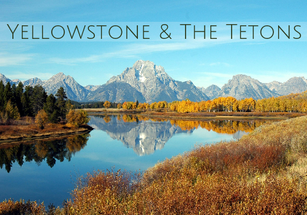

Explore the state of Oregon with the road trip of a lifetime. We take you to the awe-inspiring Smith Rock State park, Crater Lake, the rugged Oregon Coast, Columbia River Gorge, and to magnificent Mt. Hood. Whether you want to spend more time in larger cities or get a little more off the beaten path, we have the perfect Oregon road trip for you!
From the Redwood forests to San Francisco, along Hwy 1 and Big Sur down to Southern California. This road trip has some of the most beautiful outdoor adventures along with visits to some of the largest U.S. cities. Enjoy art, history, architecture, and distinctive cuisine as you explore the versatile and breathtaking coast of California!

An outdoor lover’s paradise, with five National Parks and numerous State Parks to explore you will never run out of things to do or new places to see. Whether you want to experience thrilling adventures that take your breath away or relax and enjoy the beautiful scenery, southern Utah is one of the top places everyone must encounter in their lifetime!
Some of the most magnificent scenery can be found in Montana at Glacier National Park. It will captivate all with its rugged peaks, clear lakes, abundant wildlife, and glacial-carved valleys. With 734 miles of hiking trails, guided tours for every activity, and a spot with a view no matter what you choose to do, Glacier National Park will be one of the most surreal trips you take!

Known in the United States as the first national park, and for good reason, this is a road trip you must take at least once in your life. Experience the towering and magnificent Tetons as you ride across a picturesque lake on a boat, see hundreds of buffalo, gorgeous waterfalls, and bubbling hot pots, and explore one of the most mysterious places on earth!

The most adventurous Hawaiian island is an adventure-seekers playground. Hike in Waimea Canyon, explore beautiful sandy beaches, take a helicopter tour of the stunning island views, attend a luau, and spend some time in the ocean on this beautiful island. Kauai will take your breath away with its diverse landscape and activities!